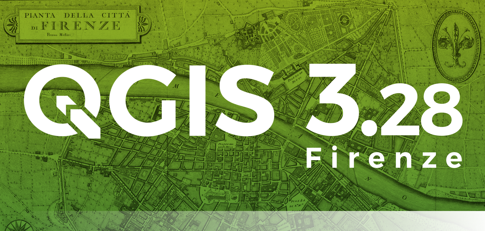

Praktikum 6 Sissejuhatus QGISi (1)
QGIS (varasemalt Quantum GIS) on vabavaraline ja avatud lähtekoodiga geoinfosüsteemide tarkvara, mida saab kasutada kõikide tuntumate operatsioonisüsteemidega. QGISis saab rakendada kõiki põhilisi ruumiandmete analüüsi meetodeid ning funktsionaalsuselt ei jää see sugugi alla kommertstarkvarale (nt ArcGIS).
6.1 Installimine
QGISil on alati kaks hetkeversiooni: stabiilne Long term release (LTR) ja uusimate võimalustega Latest release (LR). Väga suuri erinevusi nende versioonide vahel ei ole, eriti selle kursuse raames käsitletavate tööriistade osas. Arvutiklassi arvutitesse peaks olema installitud kõige hiljutisem stabiilne versioon 3.28, järgmine stabiilne versioon tuleb aga välja juba 27. oktoobril. Kel huvi, võib vaadata ka väljalaskegraafikut.
QGIS 3.28 saab alla laadida ametlikult kodulehelt, valides enda arvuti operatsioonisüsteemile sobiva variandi. Allalaadimine võib pisut aega võtta. Kui allalaadimine on lõppenud, ava fail ning installi programm. Kasuta vaikimisi valikuid.

6.2 Andmed ja failihaldus
Segaduste vältimiseks on soovitatav kursusel kasutada kaustade struktuuri, kus selle kursuse kaustas on QGISi projekti fail(id) laiendiga .qgz ja kaustad andmed ja kaardid, kuhu panete vastavalt kõik praktikumides kasutatavad andmed ja valminud kaardid. Võimalike probleemide vältimiseks (eriti Windowsi operatsioonisüsteemis) võiks kursuse kaust olla kohas (directory path), kus ei ole täpitähti. Nt C:/ut/magistrantuur/sygis_2023/geohum2023/.
Näiteks:
- C:/…/geohum2023/
- praktikum_6.qgz
- andmed/
- kirikud.gpkg
- vallakohtuprotokollid1.csv
- jne
- kaardid/
- pr6_ylesanne_1.png
- pr6_ylesanne_2.jpeg
- jne
Praktikumis kasutatavad andmed leiate Moodle’ist. Laadige need alla, pakkige lahti (parempoolne klikk ja Extract here) ja asetage kausta andmed. Soovi korral võite Eesti maakondade kihi ka ise Maa-ameti Geoportaalist alla laadida, kuna tegu on avalike ruumiandmetega. Siin kasutame shapefile-formaadis maakondade vektorandmeid (Maakond SHP). Klikkides jaotisel Ruumiandmed leiab ka rohkelt muid andmeid.
6.3 Esimene seadistamine ja kasutajaliides
Avame programmi QGIS Desktop 3.28. Sageli on esimisel korral avades QGIS eestikeelne. See on küll tore, kuid kahjuks on tõlge poolik ning internetist abi otsides on eestikeelsetest terminitest vähe kasu. Niisiis kasutame kursusel ingliskeelset versiooni. Selleks saab valida ülaserva menüüst Seaded → Suvandid → Üldine (vasakul servas). Teeme linnukese Override System Locale ette. Valime User Interface Translation rippmenüüst American English. Locale (numbers, date and currency formats) juures ei tule midagi muuta. See peab jääma Estonian Estonia (et_EE). Vajuta all servas OK. Sulge QGIS ning ava uuesti. Nüüd on programm ingliskeelne.
Joonis 6.1: Keele muutmine QGISis
6.3.1 Vaikimisi koordinaatide referentssüsteemi sätestamine.
Kuna enamik harjutusi kursusel käsitlevad Eesti ruumiandmeid, siis oleks mõistlik valida vaikimisi koordinaatide referentsüssteemiks (CRS) ka Eesti süsteem:
- Ülevalt servast menüüst valime Settings → Options → CRS and Transforms → CRS Handling. Alumisel gif-il on kasutatud eelmist QGISi stabiilset versiooni, kus seda nimetati lihtsalt CRS-iks.
- CRS for Projects alt valime Use a default CRS, klikime rippmenüü kõrval ikoonil ja kirjutame seal Filter otsinguse Estonian Coordinate System of 1997 ehk L-EST97. Vajutame sellele otsingu tulemusele ning menüü alumises servas OK. Teeme sama CRS for Layers juures. vajutame OK ja sulgeme seaded.
- Vahetame ka praeguse projekti CRS-i. Selleks klikime ekraani alumises paremas nurgas maakera ikooni kõrval ning valime ka seal EPSG:3301 koodiga CRS-i.
Joonis 6.2: Koordinaatsüsteemi sätestamine
Salvestame QGISi projekti oma kursuse kausta, valides ülevalt vasakult Project → Save. Failinimeks võib panna näiteks praktikum_6. Praktikumi jooksul võiks projekti aeg-ajalt salvestada!
Vaata QGISi kasutajaliidest. Suurde keskel olevasse aknasse ilmuvad kaardid ja ruumiandmete kihid graafiliselt. Vasakul on kihtide aken Layers. Allservas näeme kursori asukoha koordinaate, mõõtkava, mida saab seal ka muuta, ning paremal nurgas on koordinaatsüsteem, mis peaks nüüd olema EPSG:3301. Üleval servas on menüüd ja kõiksugused tööriistad.
6.4 Andmete avamine
Nagu varasematest mäletame, on põhilised ruumiandmete tüübid raster- ja vektorandmed. Viimased neist võivad koosneda punktidest, joontest või polügoonidest. Avame kõigist andmetüüpidest näite.
Avame Eesti maakondade kihi.
- Layer → Add layer → Add vector layer.
- Kliki Vector Dataset(s) juures sirvimise ikoonil (kolm punkti). Vali andmete kaustast shape-fail maakond_20231001.shp ja vajuta Open. Seejärel menüü all servas Add ja Close.
- Nüüd on avatud kiht kõigi Eesti maakondade piirjoontega.
- Layer → Add layer → Add vector layer.
Avame muinsuskaitse all olevate kirikute kihi. Kõik samamoodi nagu eelmise kihiga, valida tuleb lihtsalt geopackage’i fail kirikud.gpkg.
Avame suuremate jõgede kihi joed.gpkg. Kui on juba selge, kuidas käib menüü kaudu kihi avamine, siis võib selle kihi avamiseks faili ka lihtsalt kaardiaknasse lohistada.
Joonis 6.3: Vektorkihtide lisamine
Kihtide paneelil Layers saab kihte välja ja sisse lülitada ning hiirega tõstes muuta nende järjekorda.
Peaaknas saab hiire rullikuga suumida (all servas muutub ka mõõtkava).
Hiire vasakpoolset klahvi all hoides ja ka klaviatuuri nooltega saab kaardil liikuda.
Mingi kihi terve ulatuse nägemiseks vali Layers paneelil kiht, tee sellel paremklikk ning vali Zoom to Layer. Sellest on abi ka siis, kui oled kaardil n-ö eksinud ja ei suuda kihti enam üles leida.
Kihtide atribuuttabelit saab vaadata, kui teha kihil paremklikk ja valida Open Attribute Table. Proovime kaardil ringi liikuda ning vaatame kõikide kihtide atribuuttabelit.
Joonis 6.4: Maakondade vektorkihi atribuuttabel
Vaatame ka näidet rasterandmetest ortofotode näol. Ava 2020. a ja 1995. a ortofotod kasutades Layer → Add Layer → Add Raster Layer ning vali vastavalt failid orto_2020.tif ja orto_1995.tif. Vajuta Add ja Close.
Esmapilgul ei ole midagi näha, kuna ortofotod on väga suure mõõtkavaga (=väga väikese ala kohta). Liigu kihtide juurde (paremklikk -> Zoom to Layer(s)) ja vaata nende erinevusi. Selleks lülita vastavaid kihte Layers paneelil sisse ja välja. Proovi ka lähedale suumida, et näha eraldiseisvaid piksleid. 1995. aasta ortofotol on oluliselt vähem piksleid, mis tähendab, et ühe piksli mõõtmed on palju suuremad.
Rasteri pikslisuuruse vaatamiseks tee kihil paremklikk → Properties. Vali jaotis Information. Information from provider juures on kirjas Pixel size, antud juhul piksli küljepikkus meetrites. Pärast seda võib rasterkihid eemaldada. Selleks tee kihtide aknas kihil paremklikk → Remove layer. Võid mõlemad kihid ka korraga eemaldada.

Joonis 6.5: Rasterkihtide lisamine
Ortofotode kohta saab rohkem lugeda ja neid ka ise kaardiruutude kaupa alla laadida Maa-ameti Geoportaalist.
6.5 Kihtide visualiseerimine
Selleks, et kõik kihid välja paistaksid, peaksid need olema ülevalt alla järjekorras kirikud, jõed, maakonnad. Andmete visualiseerisemiseks on meil punktide puhul kasutada värv, kuju ja suurus. Joonte ja alade puhul on meil kuju ette antud, kuid saame lisaks värvile ja suurusele vahetada mustrit (nt katkendjoon või viirutatud ala).
6.5.1 Harjutus 1
Muudame kihtide stiili nii, et kirikud paistaksid selgelt välja, jõed oleksid sinised ja nähtavad ning maakondi tähistaksid ainult nende piirjooned. Lisame ka maakonnanimed.
Sümbolite muutmiseks teeme kihil topeltkliki (või paremkliki ja valime Properties) ning avanenud aknas valime vasakul servas jaotise Symbology.
Avanenud menüüs valime punkt- ja joonobjektidele värvi (Color) ja suuruse (Size, joonte puhul Width). Võib mängida ka läbipaistvusega (Opacity). Kui tahad vahetulemust näha, aga ei taha Properties akent kinni panna, võid vajutada avanenud akna alumises servas nupule Apply. Kui oled tulemusega rahul ja rohkem midagi muuta ei taha, vajuta OK.
Pindobjektidele ehk maakondade polügoonidele valime sümbolitüübiks Simple fill asemel Outline: Simple Line. See tähendab, et kogu ala pole mitte mingi värviga täidetud (fill), vaid näeme ainult ala piirjooni. Võib muuta ka piirjoonte värvi ja paksust (Stroke width).
Alternatiivina võib kihi stiili muutmiseks sisse lülitada paneeli Layer Styling. Selleks valime üleval menüüribal View → Panels → Layer Styling. Nüüd on seesama Symbology aken kaardiakna kõrval ning muudatused on kohe paremini näha.
Lisame maakonnanimed, valides maakondade vektorkihi puhul samas menüüs vasakult Labels ning seal No Labels asemel Single Labels. Value alt vali MNIMI.
Joonis 6.6: Harjutus 1 tulemus
Kas see on hea visualiseerimine? Mis on hea, mis on puudu, mis on üleliigne, kui eesmärgiks on näidata kaitse all olevate kirikute arvu maakonnas?
6.5.2 Harjutus 2
Harjutuse eesmärk on luua kaart, mis näitab maakondade värvi abil, kui palju on muinsuskaitse all olevaid kirikuid maakondades (nn horopleetkaart 4.3). Teisisõnu: klassifitseerime maakonnad selle järgi, millist kirikute arvu põhjal moodustuvat sagedusklassi nad esindavad.
Selleks tuleb maakondade polügoonide kihiga siduda tabel, kus on kirjas iga maakonna kirikute arv, ning värvida seejärel maakonnad vastavalt sellele arvule.
Avame Exceli, Notepad++-i vms programmiga faili kirikud_maakonniti.csv. Nagu näha, on tegu väga lihtsa andmestikuga, kus on ainult kaks tulpa ja 15 rida (iga maakonna kohta üks rida). Avame sama faili QGISis:
- Layer → Add Layer → Add Delimited Text Layer
- Klikime File name juures sirvimise ikoonil (kolm punkti). Valime kaustast faili kirikud_maakonniti.csv.
- Valime File Format juures CSV (comma-separated values ehk tabel, kus tulpasid eraldavad komad).
- Record and Fields Options juures teeme linnukese First record has field names ette. See on vajalik, et QGIS arvestaks tabeli esimest rida kui tulpade pealkirju.
- Geometry Definition juures valime No geometry (attribute only table). See tuleb valida, kuna antud tabelis ei ole ühtegi koordinaatidega tulpa. Kui oleks, saaksime siin määrata, millise nimega tulbas paiknevad pikkus- ja millise nimega tulbas laiuskraade kuvavad koordinaadid, samuti selle, millises CRSis koordinaadid on määratud.
- Vaatame nüüd, kas all Sample Data aknas on andmed kujutatud eraldi tulpades ja täpitähed olemas. Kui täpitähti pole, peame valima üleval Encoding rippmenüüst iso8859_15, mis on ametlik eesti keele kodeering, või windows-1252. Tegelikult töötavad veel paar kodeeringut.
- Add → Close. Nagu näha, ei ilmunud QGISi peaaknasse midagi, kuna tegu pole ruumiandmete kihiga, vaid lihtsalt tabeliga.
- Vaatame kihtide paneelis lisatud CSV-faili atribuuttabelit. See on samasugune nagu Excelis/Notepadis.
Ühendame kultuurimälestiste tabeli maakondade kihiga:
- Andmestike ühendamiseks peab olema mõlemas andmestikus tulp, mille sisu kattub teise andmestiku ühe tulba sisuga. Käesoleva kahe andmestiku puhul on mõlemal tulp maakondade nimedega: maakondade vektorkihil on selle atribuudi nimi
MNIMIja csv-kihilmaakond.
- Kuna ühendame ruumiandmetega mitteruumiandmeid (ja mitte vastupidi), valime Layers paneelil maakondade polügoonide vektorkihi, teeme sellel topeltkliki, valime vasakul servas jaotise Joins ning vajutame all servas rohelisele plussmärgile. Täidame avanenud aknas väljad järgmiselt:
- Join layer: kirikud_maakonniti (see on see mitteruumiandmete kiht, mida ruumiandmetega liidame)
- Join field: maakond (mitteruumiandmete kihi tulp, mille sisu kattub ruumiandmete kihi ühe tulba sisuga)
- Target field: MNIMI (ruumiandmete kihi tulp, mille sisu kattub mitteruumiandmete kihi ühe tulba sisuga)
- Joined fields ette teeme linnukese ja seal omakorda linnukese ainult tulbanime kirikuid ette, kuna me ei soovi tabelist võtta ka maakondade nimesid, mis on polügoonide vektorkihil juba olemas.
- Custom Field Name Prefix ette teeme linnukese ja kustutame sealses lahtris oleva teksti, et lisatavatele tulpadele (antud juhul tulbale kirikuid) ei kirjutataks ühendatud andmestikus ette ka liidetava kihi nime: tahame, et uues andmestikus oleks lihtsalt tulp kirikuid, mitte kirikud_maakonniti_kirikuid.
- OK → OK
- Vaatame uuesti maakondade vektorkihi atribuuttabelit (kiirklahv F6), et näha, kas igale maakonnale said lisatud kirikute arvud.
Joonis 6.7: Kirikute tabel ühendatud maakondade kihiga
Mis juhtub, kui ühendad kaks andmestikku teistpidi: kirikute arvu tabelile liidad maakondade polügoonide kihi?
Värvime maakonnad vastavalt kirikute arvule.
- Maakondade kihil teeme topeltkliki või paremkliki ja valime Properties. Liigume jaotisesse Symbology.
- Simple line asemel vali uuesti Symbol layer type juurest Simple fill
- Jaotise ülaservast valime Single Symbol asemel Graduated selleks, et värvida valitud kihi elemendid vastavalt mingile arvulisele, pidevale tunnusele (siin on selleks kirikute arv):
- Value juures valime tunnuse kirikuid. See määrab, millise tulba väärtuste põhjal maakonnad värvitakse.
- Color ramp juures valime rippmenüüst värviskaala, millel on ühtlane 2–3 tooni üleminek. Näiteks helekollasest tumeroheliseks (vt All Color Ramps -> YlGn).
- Klikime Classify. Proovime ka erinevate jaotumistega (nt Equal interval ja Pretty breaks) ja klasside hulgaga (Classes). Näiteks Pretty breaks ja kolm klassi annab ilusa tulemuse. Jälgime, et enamik maakondi ei oleks ühte värvi. Räägime klassifitseerimismeetoditest edaspidi ka lähemalt.
- Vajutame OK.
- Value juures valime tunnuse kirikuid. See määrab, millise tulba väärtuste põhjal maakonnad värvitakse.
- Nüüd on kõik maakonnad värvitud valitud värviskaalaga vastavalt sellele, kui palju on neis kirikuid. Kas see kaart on informatiivne? Mida peaks lisama või ära võtma?
Joonis 6.8: Harjutus 2 tulemus
6.6 Aluskaardid
Nagu varasemates loengutes nägime, on olemas rohkelt aluskaarte, mida erinevates rakendustes põhiliselt teemakaartide tegemisel kasutatakse. QGISis saab neid kasutada läbi pistikprogrammide ehk Plugins või WMS- ja WFS-teenuste (vastavalt web map service ja web feature service).
WMS-teenuse kaudu saab kasutada peaaegu kõiki Maa-ameti XGISis olevaid kihte. Täpsemalt saab sellest lugeda WMS teenuste lehel. Lisaks saab kasutada paljusid muid andmeid kogu maailmast. WMS-teenuse kaarte saab kasutada sisuliselt ainult visualiseerimiseks. Päringuid, valikuid vmt nende põhjal teha ei saa.
Lisame WMS-teenusest aluskaardi:
- Layer → Add Layer → Add WMS/WMTS layer.
- Lisame ühenduse (New). Avanenud aknas määrame nimeks (Name) näiteks Maa-ameti aluskaart ning URLi juurde kopeerime aadressi https://kaart.maaamet.ee/wms/alus?. Vajutame OK. Nüüd on paika pandud, millise Maa-ameti kaardiserveriga QGIS ühenduse loob.
- Klikime ühenduse loomiseks nupul Connect. Valime serverist laetud kihtide hulgast näiteks 138 MAANTEED ning klikime nupul Add.
- Lisame veel ühe ühenduse (New). Seal kirjutame nime (Name) lahtrisse Maa-ameti orto ja reljeef ning URLi juurde kopeerime aadressi https://kaart.maaamet.ee/wms/fotokaart?. Vajutame OK.
- Klikime uue ühenduse loomiseks nupul Connect. Valime serverist kihi 21 vreljeef ning klikime nupul Add. Sulgeme akna.
- Nüüd on peaaknas näha maanteed koos reljeefiga. Kui lisatud WMS-kihid ei paista välja, siis tuleb muuta kihtide järjekorda või rohkem sisse või välja suumida.
- Proovime lisada ka täiendavaid kihte.
Quickmap ja OSM
Lisame veebikaartide pistikprogrammi.
- Üleval servas valime Plugins → Manage and Install Plugins. Otsingusse kirjutame Quickmap. Valime QuickMapSercives ja installime selle. Sulgeme akna.
- Järgmiseks valime ülaservas Web → QuickMapServices → OSM → OSM standard. Nüüd on aluskaardiks OpenStreetMap. Jällegi - kui aluskaardi kiht ei paista välja, muuda Layers paneelil kihtide järjekorda või lülita muid kihte välja.
Proovime ka teisi kaarte, nt Google’i aluskaarti.
Rohkemate võimaluste jaoks laadi lisakomplekt QMS kaarte: Web → QuickMapServices → Settings → More services → Get contributed pack → OK → Save.